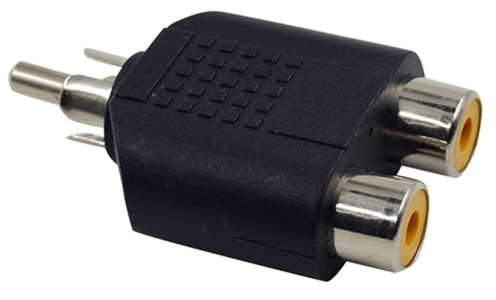

You could surely find a way to do this on S video too! it would need to splice onto Luma.
Not too long ago I came about some rather expensive lightgun adapters to inject the lightgun signal into an RGB SCART cable. You don't need to spend this much
money to set up your home shooter arcade!
The aim is quite simple, and there are a variety of ways to achieve this. All we need to do is inject the lightgun signal into the sync line. Back in the day, everyone
basically used composite video, so it was easy to inject the signal into the composite video line. These days, however, we are often using RGB SCART or Component.
This won't require much of a guide, but just a few images and an explanation. I'll be using a PS2 as an example, but the same principles apply to any retro console with lightgun games.

Simply get the lightguns RCA jack to double up into your (sync signal) green component plug anyway you want.
RCA Splitter + Male to Female RCA down to the lightgun RCA *OR* RCA Splitter + Male to Male RCA + Female to Female Adapter on the lightgun end
OR
Piggy back RCA lead on green, component green into the back of piggy back from console AV, and female to female adapter on the lightgun end
Simply get the lightguns RCA jack to double up into your sync signal anyway you want.
This is especially simple if you have an RGB modded set and you added a SCART plug. Just run a lead from the lightgun RCA into the yellow composite jack corresponding to the AV channel you used for the RGB mod, otherwise use the component guide above but use the yellow composite jack intead of the green component jack.
That's it!
Have fun and enjoy your home arcade setup!